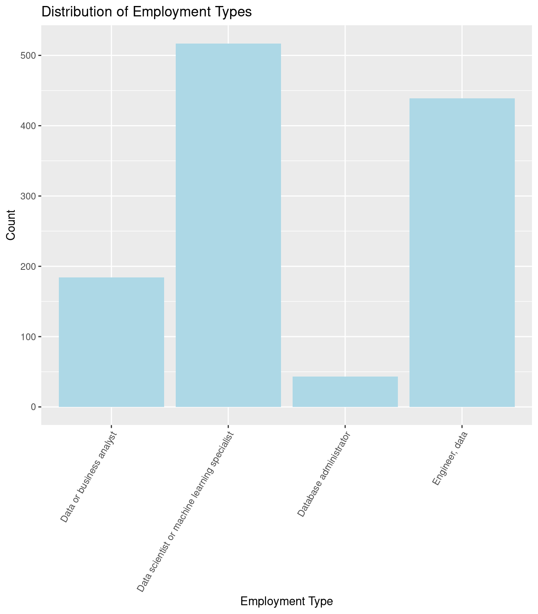
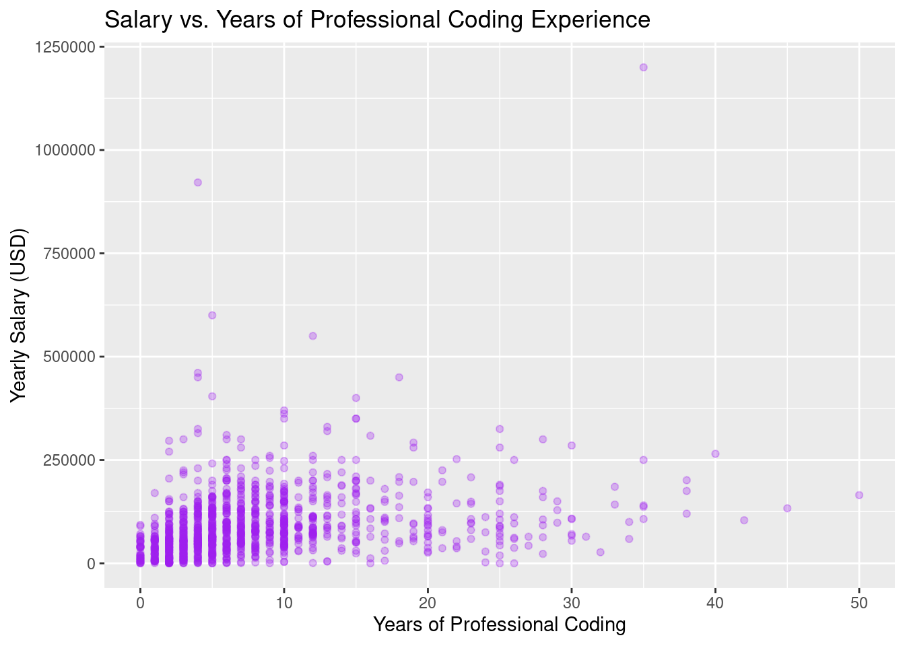
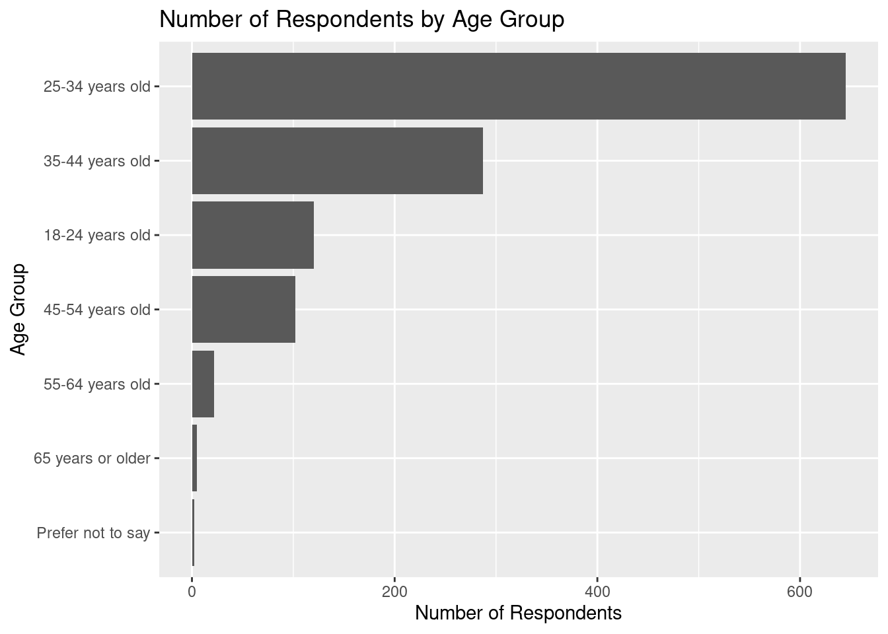

# To install a package, use the install.packages() function.
install.packages(c("moderndive", "dplyr", "ggplot2", "readr", "tidyr",
"lubridate", "fivethirtyeight", "knitr"))Statistics in R with the tidyverse
Day 1 Exercises
Working with Data in R - Explore, Visualize, Wrangle, Import
Session 1: Introduction to R and RStudio
1. Installing R and RStudio
We did this during the course in walkthroughs, but if you haven’t done it yet:
- You need to install R first from https://cloud.r-project.org/ and then install RStudio from https://posit.co/download/rstudio-desktop/.
- Once installed, work in RStudio to interact with R efficiently.
2. Exploring the RStudio Interface
- In RStudio, you will see three panes: Console, Environment, and Files.
- The Console is where you type and run your R code.
- The Environment pane shows all objects (like datasets) currently in memory.
- The Files pane helps you navigate files in your project.
3. Installing Packages
We also did this during the walkthroughs, but if you haven’t done it yet:
The c() function creates a vector in R, which is a sequence of elements. Here, it combines the package names into a single vector for installation.
4. Loading Packages
# To load a package, use the library() function.
library(moderndive)
library(dplyr)
library(ggplot2)
library(readr)
library(tidyr)
library(lubridate)
library(fivethirtyeight)
library(knitr)5. Loading and Viewing a Dataset
# Load the data_dev_survey dataset
# (if you don't have it still loaded from the end of class)
data_dev_survey <- read_csv("data_dev_survey.csv")Rows: 1183 Columns: 24
── Column specification ────────────────────────────────────────────────────────────────────────────────────────────────
Delimiter: ","
chr (18): work_as_dev, age, employment, remote_work, coding_activities, ed_level, dev_type, org_size, country, lang...
dbl (5): response_id, years_code, years_code_pro, work_exp, converted_comp_yearly
date (1): survey_completion_date
ℹ Use `spec()` to retrieve the full column specification for this data.
ℹ Specify the column types or set `show_col_types = FALSE` to quiet this message.# View the data_dev_survey data
View(data_dev_survey)The Stack Overflow survey data stored in data_dev_survey includes 1,183 responses from professionals in the data and tech fields, with information on their employment, coding activities, education level, and technical skills. The dataset provides a comprehensive view of respondents’ experience levels, preferred programming languages, work environments, and AI perspectives. It captures various demographic and professional details, including their country of work, salary, and views on AI, making it a valuable resource for analyzing trends in the data science and tech professions.
- Identification variable(s):
response_id - Measurement variable(s): remaining columns
6. Exploring Dataset Structure and Data Types
Each column in a dataset has a data type, such as:
chrfor character (text)
dblfor numeric (decimal values)
lglfor logical (TRUE/FALSE)
intfor integer (non-decimal values)
fctfor factor (categorical)
glimpse() from the dplyr package gives a preview of the data types and the first few entries in each column.
# To see an overview of the dataset’s structure:
glimpse(data_dev_survey)Rows: 1,183
Columns: 24
$ response_id <dbl> 164, 165, 190, 218, 220, 462, 542, 558, 577, 802, 815, 885, 1099, 1187, 1210, 1212,…
$ work_as_dev <chr> "I am a developer by profession", "I am a developer by profession", "I am a develop…
$ age <chr> "25-34 years old", "18-24 years old", "35-44 years old", "35-44 years old", "25-34 …
$ employment <chr> "Employed, full-time;Independent contractor, freelancer, or self-employed", "Employ…
$ remote_work <chr> "Remote", "Hybrid (some remote, some in-person)", "Hybrid (some remote, some in-per…
$ coding_activities <chr> "Hobby;Professional development or self-paced learning from online courses;Freelanc…
$ ed_level <chr> "Bachelor’s degree (B.A., B.S., B.Eng., etc.)", "Bachelor’s degree (B.A., B.S., B.E…
$ dev_type <chr> "Engineer, data", "Data scientist or machine learning specialist", "Data scientist …
$ years_code <dbl> 14, 7, 8, 29, 7, 25, 13, 8, 22, 10, 3, 13, 8, 19, 3, 3, 7, 10, 15, 7, 27, 40, 15, 4…
$ years_code_pro <dbl> 10, 5, 8, 17, 6, 20, 3, 7, 13, 10, 2, 12, 3, 19, 2, 1, 4, 5, 5, 2, 25, 30, 10, 4, 3…
$ org_size <chr> "1,000 to 4,999 employees", "10 to 19 employees", "500 to 999 employees", "1,000 to…
$ country <chr> "Romania", "Canada", "Cyprus", "Italy", "Netherlands", "Switzerland", "Germany", "U…
$ language_have_worked_with <chr> "HTML/CSS;Java;JavaScript;R;SQL;VBA", "C;C++;HTML/CSS;JavaScript;Python;TypeScript"…
$ language_want_to_work_with <chr> "PowerShell;Python;SQL", "C;C++;Python", "Bash/Shell (all shells);HTML/CSS;Python;R…
$ op_sys_professional_use <chr> "Ubuntu;Windows", "Ubuntu", "Ubuntu;Windows", "Red Hat;Windows", "MacOS;Windows", "…
$ ai_view <chr> "Very favorable", "Very favorable", "Favorable", "Very favorable", "Favorable", "Fa…
$ ai_trust <chr> "Somewhat trust", "Somewhat trust", "Somewhat trust", "Somewhat trust", "Somewhat t…
$ ic_or_manager <chr> "Individual contributor", "Individual contributor", "Individual contributor", "Indi…
$ work_exp <dbl> 10, 7, 16, 17, 7, 25, 3, 7, 13, 10, 10, 13, 10, 19, 3, 14, 3, 5, 5, 2, 25, 30, 11, …
$ industry <chr> "Information Services, IT, Software Development, or other Technology", "Information…
$ us_or_not <chr> "Not US", "Not US", "Not US", "Not US", "Not US", "Not US", "Not US", "US", "Not US…
$ plans_to_use_ai <chr> "Using", "Using", "Using", "Plan to use", "Using", "Plan to use", "Using", "Plan to…
$ converted_comp_yearly <dbl> 3237, 52046, 74963, 56757, 74963, 132260, 117798, 165974, 64254, 71779, 36351, 8134…
$ survey_completion_date <date> 2023-05-02, 2023-05-05, 2023-05-13, 2023-05-28, 2023-05-31, 2023-05-17, 2023-05-13…7. Accessing a Single Column
# Access the work_exp column from the data_dev_survey dataset
data_dev_survey$work_exp [1] 10 7 16 17 7 25 3 7 13 10 10 13 10 19 3 14 3 5 5 2 25 30 11 2 3 26 2 2 7 3 6 13 20 13 3 13 6 10
[39] 3 15 3 8 8 8 10 16 5 6 17 10 10 5 15 4 4 5 8 2 2 12 9 5 10 8 11 19 10 15 35 4 6 6 20 6 24 5
[77] 21 5 8 5 4 2 2 15 25 15 3 20 13 20 12 1 7 15 1 6 6 9 6 6 6 2 6 10 1 15 7 2 6 5 10 2 6 1
[115] 3 10 5 4 5 5 2 22 4 10 1 8 3 18 2 4 13 1 11 2 5 22 5 11 1 3 11 6 33 6 7 4 2 2 2 12 6 2
[153] 25 7 11 3 10 13 5 16 24 35 5 9 10 10 3 20 6 2 13 2 16 5 25 5 2 20 10 20 20 12 9 8 2 7 2 19 15 19
[191] 15 5 7 10 13 30 6 4 4 2 34 5 9 2 9 6 3 3 14 10 8 5 26 10 4 28 9 6 13 8 2 18 14 7 10 21 13 7
[229] 6 10 27 7 7 5 13 6 5 3 10 2 28 3 25 3 15 4 10 9 10 6 6 2 4 10 3 2 5 5 8 5 8 1 11 8 2 12
[267] 1 6 7 29 10 3 7 2 13 4 9 3 6 1 5 1 5 25 15 3 27 5 22 2 25 4 2 5 15 8 2 20 1 6 19 4 1 6
[305] 21 0 10 10 12 15 13 8 3 6 10 10 8 36 2 12 35 12 3 3 7 18 10 1 8 11 8 13 2 10 7 8 10 12 16 10 6 7
[343] 2 14 24 40 26 15 16 4 20 4 27 8 3 3 12 15 10 15 1 3 5 10 10 9 17 24 25 8 5 9 2 2 3 14 40 4 11 7
[381] 3 13 5 25 6 5 15 2 6 25 0 6 9 12 28 23 3 5 1 1 9 10 2 5 31 23 2 0 16 18 6 6 12 9 4 2 15 25
[419] 18 4 5 3 8 7 28 1 10 4 47 15 27 5 30 4 4 7 25 7 6 7 1 6 4 10 15 48 13 12 10 5 15 13 2 25 25 10
[457] 4 16 5 10 2 11 7 14 23 10 6 15 25 19 25 1 8 2 9 27 15 28 3 10 5 5 10 10 1 19 2 12 7 35 23 4 1 10
[495] 7 40 3 7 10 11 5 5 31 21 25 7 25 12 14 12 5 2 17 17 9 20 5 7 9 36 8 4 22 10 10 22 9 7 3 13 3 12
[533] 7 15 23 10 13 3 1 5 15 6 1 7 23 10 8 42 5 20 14 7 2 11 8 25 35 16 24 7 10 10 12 19 21 4 16 12 16 3
[571] 8 6 7 12 10 30 11 20 10 23 6 4 10 7 8 7 17 15 20 8 14 0 6 1 16 1 18 30 10 9 14 6 10 18 13 4 22 1
[609] 2 8 4 5 8 3 4 4 30 30 26 5 5 11 4 7 15 5 5 7 20 4 10 8 3 5 3 2 5 1 3 7 31 20 1 5 6 3
[647] 12 8 16 7 3 1 1 7 9 32 11 8 9 2 1 6 7 22 8 21 2 15 10 35 5 5 22 14 15 7 8 10 31 23 12 15 7 12
[685] 9 6 38 12 5 17 4 30 4 3 42 2 1 5 5 18 3 29 3 20 14 3 10 7 6 4 13 10 15 7 3 13 4 3 8 6 8 4
[723] 15 3 5 7 17 3 1 26 11 2 5 20 1 1 17 5 25 18 3 4 15 6 17 22 1 26 11 10 2 20 2 18 3 3 3 2 14 1
[761] 6 9 4 40 4 12 9 5 1 9 1 4 8 10 6 8 2 3 9 3 12 6 7 6 7 21 20 21 8 14 7 6 11 27 6 2 4 1
[799] 13 10 30 3 12 10 20 3 6 2 5 2 9 17 7 10 6 3 1 7 7 8 2 25 7 16 7 12 10 12 12 0 9 5 6 4 3 5
[837] 7 6 2 2 2 8 9 13 7 4 9 35 8 2 10 2 12 3 7 6 6 8 1 7 3 4 3 15 10 6 13 3 15 1 10 10 6 15
[875] 5 4 7 11 6 13 7 4 16 9 14 3 6 8 10 13 25 6 23 17 5 8 9 8 4 8 4 10 15 13 0 15 1 10 5 11 16 10
[913] 8 2 1 12 3 15 1 9 10 9 6 14 5 20 9 30 16 12 3 5 2 1 10 5 1 23 2 2 4 34 14 4 5 6 14 3 5 9
[951] 4 3 9 6 12 19 9 19 12 3 5 10 4 4 5 5 35 4 1 8 6 3 13 5 8 3 7 25 2 5 1 4 5 5 14 20 10 3
[989] 5 11 2 1 2 12 4 8 3 8 5 9 4 3 8 4 2 9 1 10 15 8 7 3 10 22 16 15 23 2 8 6 10 9 3 2 6 25
[1027] 12 3 12 7 5 5 1 2 5 8 3 2 8 6 3 3 8 2 10 3 25 4 5 6 4 1 1 2 15 6 6 4 7 10 15 4 1 46
[1065] 10 8 5 11 1 15 5 1 4 33 2 6 39 15 10 1 11 5 9 7 15 7 3 2 5 1 4 2 9 4 8 3 0 20 5 5 25 12
[1103] 31 3 2 12 2 14 5 25 6 3 4 11 2 1 2 1 1 4 1 14 5 3 2 4 7 2 1 1 4 1 8 11 5 1 1 2 3 16
[1141] 2 4 11 7 6 11 2 20 12 5 1 3 3 3 4 30 5 2 30 8 4 4 15 15 3 3 10 8 6 7 5 1 47 25 4 13 1 8
[1179] 3 8 2 11 398. Checking the First Few Rows
# To quickly see the first 6 rows of the dataset:
head(data_dev_survey)# A tibble: 6 × 24
response_id work_as_dev age employment remote_work coding_activities ed_level dev_type years_code years_code_pro
<dbl> <chr> <chr> <chr> <chr> <chr> <chr> <chr> <dbl> <dbl>
1 164 I am a develop… 25-3… Employed,… Remote Hobby;Profession… Bachelo… Enginee… 14 10
2 165 I am a develop… 18-2… Employed,… Hybrid (so… Hobby;School or … Bachelo… Data sc… 7 5
3 190 I am a develop… 35-4… Employed,… Hybrid (so… Hobby;Profession… Profess… Data sc… 8 8
4 218 I am a develop… 35-4… Employed,… Hybrid (so… Professional dev… Some co… Databas… 29 17
5 220 I am a develop… 25-3… Employed,… Hybrid (so… Hobby;Contribute… Bachelo… Enginee… 7 6
6 462 I am a develop… 45-5… Employed,… Hybrid (so… Hobby;Contribute… Master’… Data sc… 25 20
# ℹ 14 more variables: org_size <chr>, country <chr>, language_have_worked_with <chr>,
# language_want_to_work_with <chr>, op_sys_professional_use <chr>, ai_view <chr>, ai_trust <chr>,
# ic_or_manager <chr>, work_exp <dbl>, industry <chr>, us_or_not <chr>, plans_to_use_ai <chr>,
# converted_comp_yearly <dbl>, survey_completion_date <date>9. Basic Operations in R
# Use the $ and basic arithmetic operations in R to determine a new vector
# called ratio_code_pro that is the ratio of years_code_pro to
# years_code from data_dev_survey
ratio_code_pro <- data_dev_survey$years_code_pro / data_dev_survey$years_code
# Print out the first six entries of your new vector
head(ratio_code_pro)[1] 0.7142857 0.7142857 1.0000000 0.5862069 0.8571429 0.800000010. Using Functions in R
# Check ?View to understand its arguments
?View
# Provide the names of the arguments to view the dataset and give it the name "Survey Data"
View(title = "Survey Data", x = data_dev_survey) # Note you can switch the order around!
# Do the same thing again but using positional arguments instead
View(data_dev_survey, "Survey Data")Session 2: Data Visualization with ggplot2
11. Installing and Loading Necessary Packages
# Load required packages for data visualization
library(ggplot2) # Not necessary if already loaded
library(moderndive) # Not necessary if already loaded
# TIP: You can install packages if not already installed
# install.packages(c("ggplot2", "moderndive"))12. Visualizing Years of Coding Experience Distribution: Histogram
# Create a histogram of years of pro coding experience
ggplot(data_dev_survey, aes(x = years_code_pro)) +
geom_histogram(binwidth = 2, fill = "orange", color = "black") +
labs(title = "Distribution of Professional Coding Experience",
x = "Years of Coding Experience", y = "Count")13. Visualizing Years of Pro Coding Experience by Developer Type: Side-by-side Boxplot
# Create a boxplot of years of coding experience by developer type
ggplot(data_dev_survey, aes(x = dev_type, y = years_code_pro)) +
geom_boxplot(fill = "lightgreen") +
labs(title = "Years of Professional Coding Experience by Developer Type",
y = "Years of Coding Experience") +
theme(axis.text.x = element_text(angle = 45, hjust = 1))14. Visualizing Developer Types: Barplot
# Create a barplot of developer types
ggplot(data_dev_survey, aes(x = dev_type)) +
geom_bar(fill = "lightblue") +
labs(title = "Distribution of Employment Types",
x = "Employment Type", y = "Count") +
theme(axis.text.x = element_text(angle = 60, hjust = 1))
15. Scatterplot: Salary vs. Coding Experience
Apply some alpha to check for overplotting!
# Scatterplot showing the relationship between salary and years of professional
# coding experience
ggplot(data_dev_survey, aes(x = years_code_pro, y = converted_comp_yearly)) +
geom_point(color = "purple", alpha = 0.3) +
labs(title = "Salary vs. Years of Professional Coding Experience",
x = "Years of Professional Coding",
y = "Yearly Salary (USD)")
Check out Subsection 2.3.2 of ModernDive V2 for overplotting discussion.
16. Faceted Barplot: Age Distribution by Developer Type
# Faceted barplot showing age distribution across developer types
ggplot(data_dev_survey, aes(x = age)) +
geom_bar(fill = "skyblue") +
facet_wrap(~dev_type) +
labs(title = "Age by Developer Type",
x = "Age", y = "Count") +
theme(axis.text.x = element_text(angle = 45, hjust = 1))17. Pie Chart vs Bar Chart: Remote Work Distribution
# Pie chart of remote work preferences
ggplot(data_dev_survey, aes(x = "", fill = remote_work)) +
geom_bar(width = 1) +
coord_polar(theta = "y") +
labs(title = "Remote Work Preferences")The pie chart visualizes how respondents prefer to work (e.g., remote, hybrid, in-person). Given the small numbers of categories a pie chart can work OK here, but a bar chart is often better for comparisons.
# Horizontal bar chart of remote work preferences
ggplot(data_dev_survey, aes(x = remote_work, fill = remote_work)) +
geom_bar() +
coord_flip() +
labs(title = "Remote Work Preferences")18. Line Graph: Time Series Data
Modify the code below to look at births in 2012 and 2013 instead of 2014.
library(fivethirtyeight)
library(lubridate)
# Old Code
# Filter the data for 2014
US_births_2014 <- US_births_2000_2014 |>
filter(year(date) == 2014)
# Create a line graph showing the number of births in 2014
ggplot(US_births_2014, aes(x = date, y = births)) +
geom_line(color = "blue") +
labs(title = "Daily U.S. Births in 2014",
x = "Date", y = "Number of Births")# Revised code
# Filter the data for 2012 and 2013
US_births_2012_2013 <- US_births_2000_2014 |>
filter(year(date) == 2012 | year(date) == 2013)
# This can also be done with the `%in%` operator
US_births_2012_2013 <- US_births_2000_2014 |>
filter(year(date) %in% c(2012, 2013))
# Create a line graph showing the number of births in 2014
ggplot(US_births_2012_2013, aes(x = date, y = births)) +
geom_line(color = "blue") +
labs(title = "Daily U.S. Births in 2012 and 2013",
x = "Date", y = "Number of Births")Session 3: Data Wrangling and Tidy Data
19. Filtering Rows with filter()
# Filter 18 to 24 year olds with less than 2 years of coding
young_coders <- data_dev_survey |>
filter(age == "18-24 years old", years_code < 2)
young_coders# A tibble: 5 × 24
response_id work_as_dev age employment remote_work coding_activities ed_level dev_type years_code years_code_pro
<dbl> <chr> <chr> <chr> <chr> <chr> <chr> <chr> <dbl> <dbl>
1 52658 I am not prima… 18-2… Employed,… Hybrid (so… Hobby;Bootstrapp… Bachelo… Data or… 1 0
2 54834 I am not prima… 18-2… Employed,… Remote Contribute to op… Bachelo… Data or… 1 0
3 56787 I am a develop… 18-2… Employed,… Remote Hobby;Profession… Somethi… Enginee… 1 0
4 71528 I am a develop… 18-2… Employed,… In-person Hobby;Bootstrapp… Associa… Data or… 1 0
5 84566 I am a develop… 18-2… Employed,… Hybrid (so… Hobby Bachelo… Enginee… 1 0
# ℹ 14 more variables: org_size <chr>, country <chr>, language_have_worked_with <chr>,
# language_want_to_work_with <chr>, op_sys_professional_use <chr>, ai_view <chr>, ai_trust <chr>,
# ic_or_manager <chr>, work_exp <dbl>, industry <chr>, us_or_not <chr>, plans_to_use_ai <chr>,
# converted_comp_yearly <dbl>, survey_completion_date <date>20. Summarizing Data with summarize()
# Summarize average salary and standard deviation of salary
summary_stats <- data_dev_survey |>
summarize(
avg_salary = mean(converted_comp_yearly, na.rm = TRUE),
std_salary = sd(converted_comp_yearly, na.rm = TRUE)
)
summary_stats# A tibble: 1 × 2
avg_salary std_salary
<dbl> <dbl>
1 90684. 81896.21. Grouping Data with group_by()
# Use kable() on your summarized data to make it look nice
library(knitr)
# Group by remote_work and summarize the average salary
# and standard deviation of salary
salary_by_remoteness <- data_dev_survey |>
group_by(remote_work) |>
summarize(
avg_salary = mean(converted_comp_yearly, na.rm = TRUE),
std_salary = sd(converted_comp_yearly, na.rm = TRUE)
)
kable(salary_by_remoteness)| remote_work | avg_salary | std_salary |
|---|---|---|
| Hybrid (some remote, some in-person) | 90133.84 | 75159.61 |
| In-person | 60711.75 | 65364.24 |
| Remote | 102048.93 | 92879.35 |
22. Creating New Variables with mutate()
# Create a new variable called coding_experience_category
# that categorizes developers by years of professional coding experience
# More than 20 = "Veteran"
# More than 10 = "Experienced"
# More than 5 = "Intermediate"
# Otherwise = "Junior"
data_dev_survey <- data_dev_survey |>
mutate(
coding_experience_category = case_when(
years_code_pro > 20 ~ "Veteran",
years_code_pro > 10 ~ "Experienced",
years_code_pro > 5 ~ "Intermediate",
TRUE ~ "Junior"
), .after = years_code_pro
)
# Can also do this more explicitly using the `between()` function
# which is a shortcut for x >= left & x <= right
# Since the bounds are inclusive, we need to adjust the values
data_dev_survey <- data_dev_survey |>
mutate(
coding_experience_category = case_when(
years_code_pro > 20 ~ "Veteran",
between(years_code_pro, 11, 20) ~ "Experienced",
between(years_code_pro, 6, 10) ~ "Intermediate",
TRUE ~ "Junior"
), .after = years_code_pro
)23. Arranging Rows with arrange()
# Arrange respondents by years coding in descending order
data_dev_survey |>
arrange(desc(years_code))# A tibble: 1,183 × 25
response_id work_as_dev age employment remote_work coding_activities ed_level dev_type years_code years_code_pro
<dbl> <chr> <chr> <chr> <chr> <chr> <chr> <chr> <dbl> <dbl>
1 33252 I am a develo… 65 y… Employed,… Remote Hobby Master’… Data sc… 50 50
2 32151 I am a develo… 55-6… Employed,… Remote I don’t code out… Some co… Databas… 47 45
3 88354 I am a develo… 55-6… Employed,… Hybrid (so… Hobby;Freelance/… Master’… Enginee… 46 38
4 40023 I am a develo… 65 y… Employed,… Remote I don’t code out… Some co… Databas… 45 42
5 38567 I am not prim… 45-5… Independe… Hybrid (so… Hobby;Profession… Associa… Databas… 44 35
6 28489 I am a develo… 55-6… Employed,… Remote Hobby;Contribute… Bachelo… Enginee… 43 40
7 36249 I am a develo… 55-6… Employed,… In-person Hobby Bachelo… Data or… 42 30
8 10923 I am a develo… 45-5… Employed,… Hybrid (so… I don’t code out… Bachelo… Enginee… 41 33
9 50951 I am not prim… 55-6… Employed,… Remote Hobby;Contribute… Master’… Data or… 41 35
10 81625 I am not prim… 65 y… Employed,… Hybrid (so… Professional dev… Bachelo… Enginee… 41 38
# ℹ 1,173 more rows
# ℹ 15 more variables: coding_experience_category <chr>, org_size <chr>, country <chr>,
# language_have_worked_with <chr>, language_want_to_work_with <chr>, op_sys_professional_use <chr>, ai_view <chr>,
# ai_trust <chr>, ic_or_manager <chr>, work_exp <dbl>, industry <chr>, us_or_not <chr>, plans_to_use_ai <chr>,
# converted_comp_yearly <dbl>, survey_completion_date <date>24. Selecting Specific Columns with select()
# After doing the previous arranging, select id, developer type, and professional
# coding experience columns
selected_data <- data_dev_survey |>
arrange(desc(years_code)) |>
select(response_id, dev_type, years_code_pro)
selected_data# A tibble: 1,183 × 3
response_id dev_type years_code_pro
<dbl> <chr> <dbl>
1 33252 Data scientist or machine learning specialist 50
2 32151 Database administrator 45
3 88354 Engineer, data 38
4 40023 Database administrator 42
5 38567 Database administrator 35
6 28489 Engineer, data 40
7 36249 Data or business analyst 30
8 10923 Engineer, data 33
9 50951 Data or business analyst 35
10 81625 Engineer, data 38
# ℹ 1,173 more rows25. Putting a Whole |>line Together
# Create a pipeline that filters, groups, summarizes, mutates, arranges,
# and selects columns for Database administrators and Data Engineers
# Group by country and summarize average years of professional coding experience
# and average salary, categorizing salary as High (> 100000),
# Medium (>5e4), or Low
# Sort by descending years of average professional coding experience
# Choose country, Average Years Coding, Average Salary, and salary_category
# columns
data_dev_survey |>
filter(dev_type %in% c("Database administrator", "Engineer, data")) |>
group_by(country) |>
summarize(
avg_years_code_pro = mean(years_code_pro, na.rm = TRUE),
avg_salary = mean(converted_comp_yearly, na.rm = TRUE)
) |>
ungroup() |>
mutate(
salary_category = case_when(
avg_salary > 1e5 ~ "High",
avg_salary > 5e4 ~ "Medium",
TRUE ~ "Low"
)
) |>
arrange(desc(avg_years_code_pro)) |>
select(country,
`Average Years Coding` = avg_years_code_pro,
`Average Salary` = avg_salary,
salary_category)# A tibble: 72 × 4
country `Average Years Coding` `Average Salary` salary_category
<chr> <dbl> <dbl> <chr>
1 Norway 20 90613 Medium
2 Argentina 19 26544. Low
3 Russian Federation 17 6188 Low
4 China 16 3 Low
5 South Africa 16 58655 Medium
6 Belgium 15.3 114390. High
7 Finland 15.2 72018 Medium
8 Italy 15.1 51556 Medium
9 Cuba 15 24000 Low
10 Bolivia 14 60000 Medium
# ℹ 62 more rows26. Creating data for geom_col() use
# Create a data frame for geom_col() to count the
# number of respondents per age group
age_counts <- data_dev_survey |>
group_by(age) |>
summarize(num_respondents = n()) |>
arrange(desc(num_respondents))
# Use x = reorder(age, num_respondents) to order the age groups by
# number of respondents and make a horizontal bar chart
ggplot(age_counts, aes(x = reorder(age, num_respondents), y = num_respondents)) +
geom_col() +
coord_flip() +
labs(title = "Number of Respondents by Age Group",
x = "Age Group", y = "Number of Respondents")
27. Converting wide data into tidy data
# Convert wide data into tidy data
library(tibble)
library(tidyr)
# Collected from https://data.worldbank.org/?locations=CA-AR-AU
# CO2 emissions (metric tons per capita)
wide_co2_emissions <- tibble(
country = c("Canada", "Argentina", "Australia"),
`2017` = c(15.5, 4.1, 16.1),
`2018` = c(15.6, 4, 15.9),
`2019` = c(15, 3.7, 15.6),
`2020` = c(13.6, 3.4, 14.8)
)
# Use pivot_longer to convert data to tidy format making sure to turn year
# into an integer variable
tidy_co2 <- wide_co2_emissions |>
pivot_longer(cols = -country,
names_to = "year",
values_to = "co2_emissions") |>
mutate(year = as.integer(year))
# Plot data as a linegraph
ggplot(tidy_co2, aes(x = year, y = co2_emissions, color = country)) +
geom_point() +
geom_line() +
labs(title = "CO2 Emissions Over Time",
x = "Year", y = "CO2 Emissions") +
scale_x_continuous(breaks = c(2017, 2018, 2019, 2020))28. Importing data from a CSV file
# Check out the help file for read_csv to learn about the default arguments
# such as col_names = TRUE that are set automatically if not specified
?read_csv